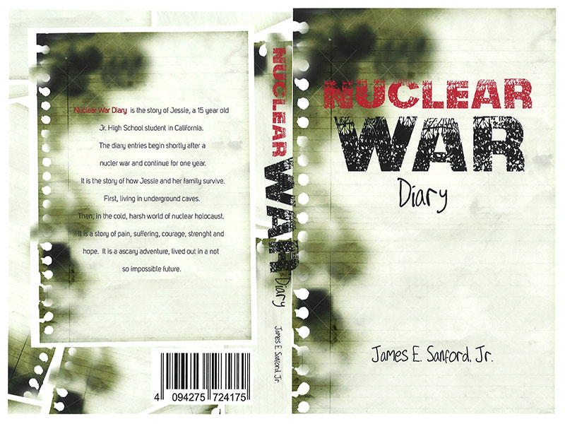
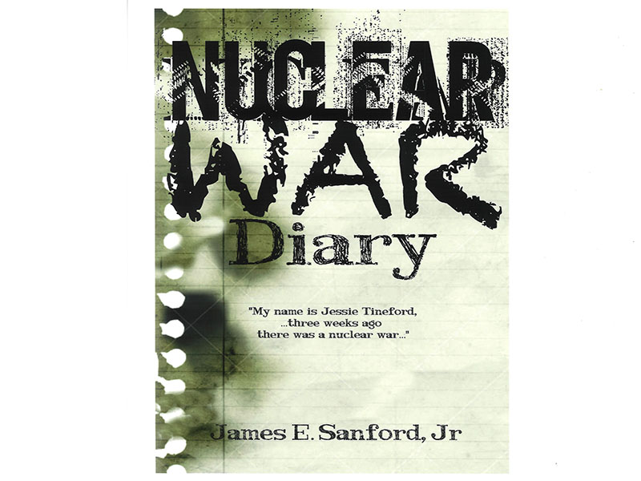
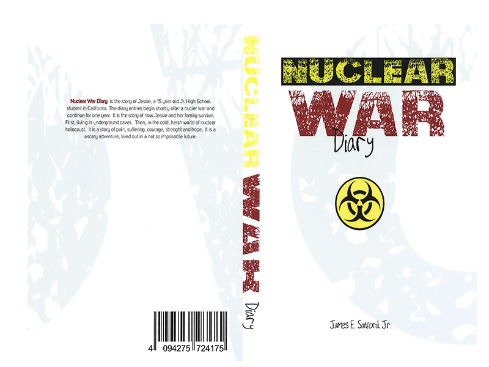
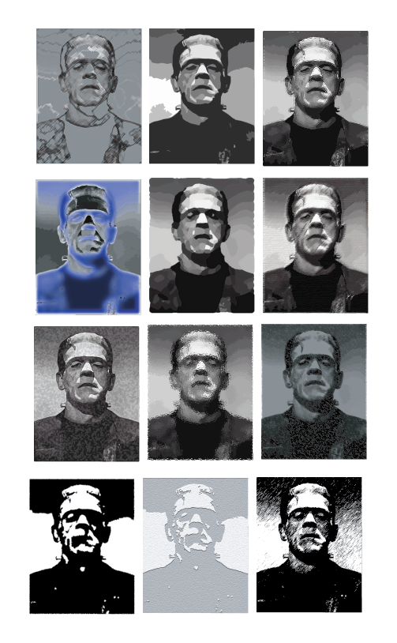
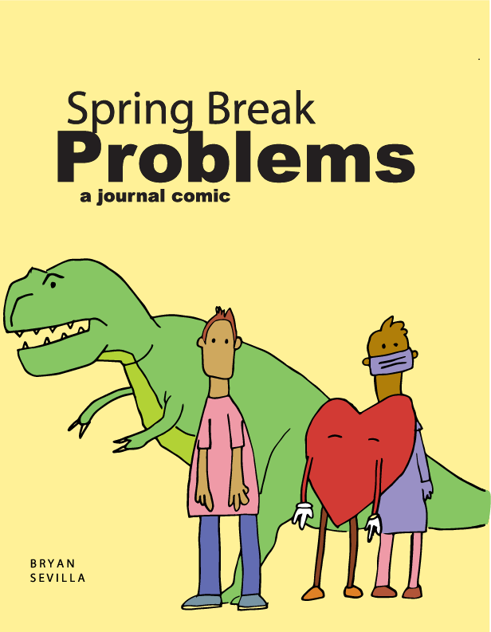

Here is my version of a book cover. I recreated a book cover. I think my version is better.



Illustrator is always fun

In this exercise I had to make diffrent versions of images of the frankeienstien monster.

This is a cover of a comic book I did in Illustrator
 I had to make a pattern in this exersice.
I had to make a pattern in this exersice.